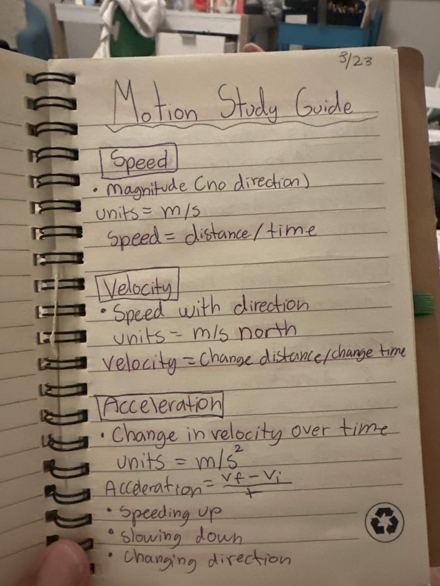
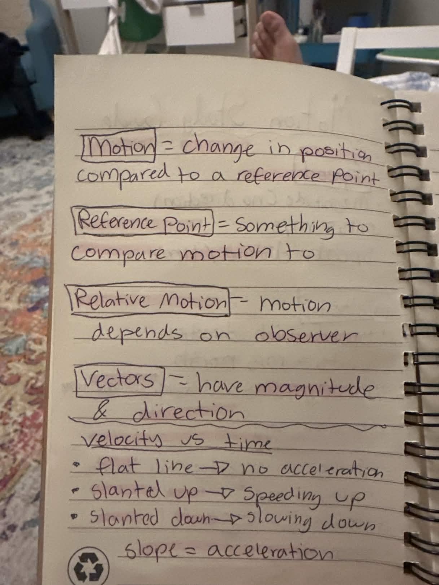
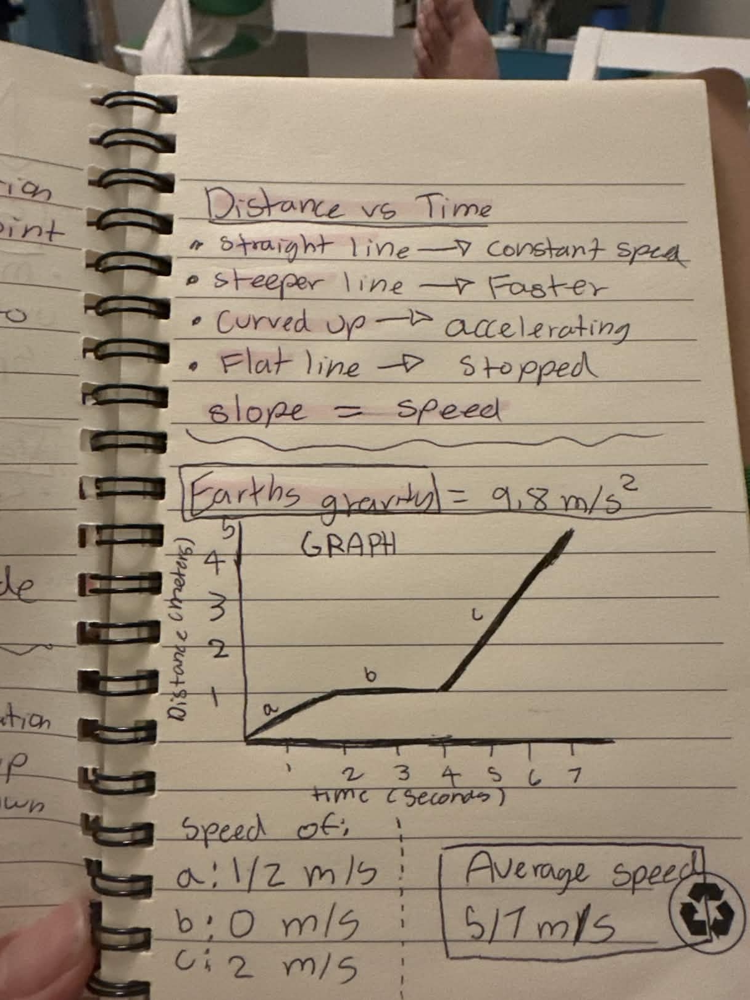

motion
Motion is about change in position
If your location changes compared to some reference point, you have motion. No position change = no motion.
Memory hook: motion is basically “before vs. after.”
Here’s a second version with a cleaner, more editorial design and a longer quiz. The content still comes from your notes, but it’s explained in a way that feels more like having a smart older cousin teach it than reading a notebook page out loud.
If you need to understand this fast, the trick is to stop treating each word like isolated vocab and start seeing how they relate.
If your location changes compared to some reference point, you have motion. No position change = no motion.
A bench, a building, a tree, or the pier can all be reference points. They help you decide whether position changed.
Someone inside a moving car may feel still, while someone outside sees them moving quickly. Motion depends on the observer’s frame.
Speed tells only the amount of motion per time. Units: m/s. Formula: distance ÷ time.
Velocity includes direction, like 5 m/s north. Your notes emphasize that direction is what makes it different.
Speeding up, slowing down, or turning all count as acceleration because they all change velocity.
This is the kind of section you skim right before class when you need the whole unit to compress into one screen.
speed = distance ÷ time
Units: m/s
(vf − vi) ÷ t
Units: m/s²
9.8 m/s²
That exact number matters.
Straight line = constant speed.
Steeper line = faster.
Flat line = stopped.
Curved up = accelerating.
Slope = speed.
Flat line = no acceleration.
Slant up = speeding up.
Slant down = slowing down.
Slope = acceleration.
Segment a = 1/2 m/s
Segment b = 0 m/s
Segment c = 2 m/s
Average speed = 5/7 m/s
Speed only answers how fast. Velocity answers how fast and in what direction. Same speed can still mean different velocities if the direction changes.
This version has more questions, more scenario-based wording, and more chances to catch the little differences that usually trip people up.
Still here in case you want to cross-check the interactive version against your actual study guide.
Speed, velocity, and acceleration definitions.

Motion, reference point, relative motion, vectors, and graph notes.

Distance-time graph notes, gravity, and sample graph calculations.
